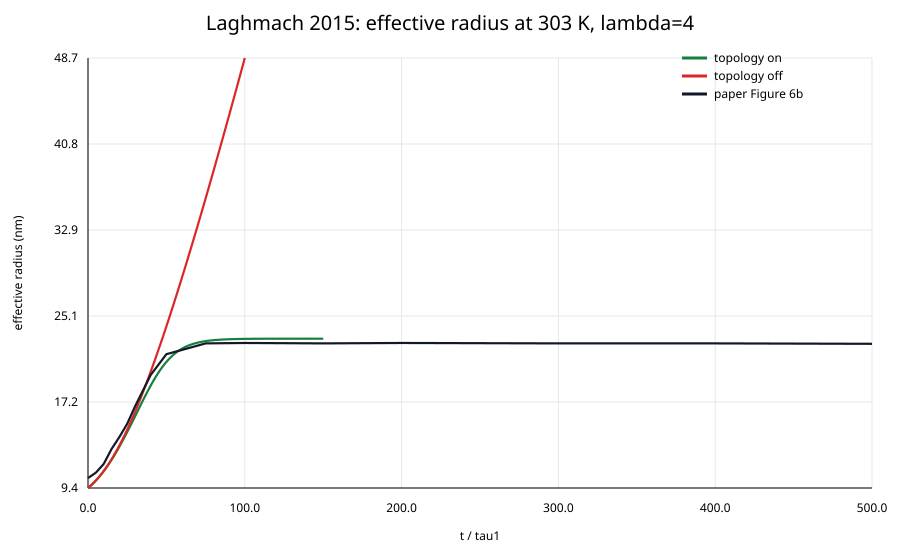

结论
状态：阶段性复现，不是完整成功。 约化模型已经给出核心机制的独立数值证据，COMSOL Java 模型完成编译和短时求解；完整有限变形长时矩阵仍有 5 项验收缺口。
23.008 nm
拓扑约束开启后的平台半径
69.49%
界面弹性能重叠率，门槛 ≥ 50%
6.06%
论文 Fig. 6b 半径曲线 NRMSE
复现问题
目标论文为 Laghmach et al., Phase field modelling of strain induced crystal growth in an elastic matrix, J. Chem. Phys. 142, 244905 (2015)，DOI 10.1063/1.4923226。
核心问题不是“能否画出相似晶体”，而是当基体承受拉伸时，拓扑约束是否把弹性能推向扩散界面，并最终产生论文所报告的尺寸平台和临界拉伸比。
建模与审计
- Equation audit：把论文式 (1)–(30) 映射到相场、位移、压力、拓扑位移和观测量。
- Consistency check：识别印刷势垒系数与自由能变分、解析界面及表面张力之间的矛盾，默认采用变分一致的
−1/2。 - Reference solver：先用可审计约化模型验证平台半径、拓扑开关、温度—拉伸阈值和网格/时间步收敛。
- COMSOL build：构建
θ, ux, uy, P, utx, uty耦合模型，采用分离求解序列降低非线性耦合难度。 - Fail-closed review：缺失完整力学指标时保持 Partial，不以短时 smoke 或生成 MPH 代替最终验收。
关键证据

| 检查项 | 结果 | 门槛 |
|---|---|---|
| 基准最终有效半径 | 23.00796 nm | 22–25 nm |
| 后期漂移 / 100 τ₁ | 0.03414% | < 1% |
| 关闭拓扑后的增长速度 | 0.51738 nm/τ₁ | > 0.05 |
| 0.5 / 1 nm 网格半径差 | 1.4132% | < 3% |
| 临界拉伸比 @ 298/303/308 K | 3 / 4 / 5 | 3 / 4 / 5 |
尚未关闭的验收缺口
| 指标 | 当前状态 | 原因 |
|---|---|---|
max |detF−1| | 缺少权威长时结果 | 需要完整有限变形耦合解 |
平均 σxx 净下降 | 缺少权威结果 | 需要完整位移—压力耦合 |
σxx(t) NRMSE | 缺少权威结果 | 尚无完整 COMSOL 应力曲线 |
| 表面能拟合 B | 误差 28.1% | 超出 20% 门槛，不做参数硬调 |
| 表面能拟合 R² | 0.84099 | 低于 0.98 门槛 |
为什么保留 Partial
这个案例展示了 SimDog 所需的一条重要产品原则：算法可以发现机制，代码可以编译，短时模型也可以收敛，但只要完整验收指标没有形成证据，Controller 就不能把案例发布为“完整复现”。